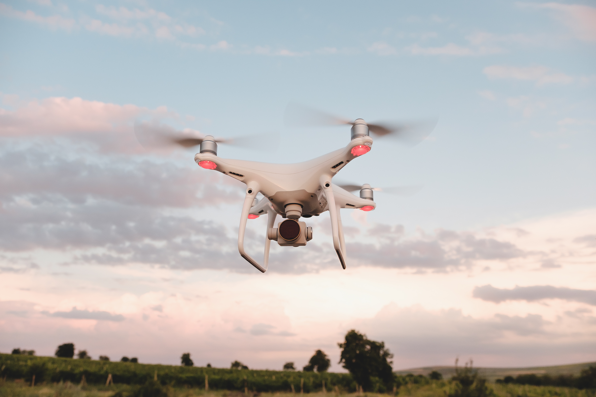

Types of Surveillance Robots for Home Security
Commercial security robots
Robots which are having sensors and moving parts are very much expensive. They are not easily affordable. If they are simple or vacuum cleaner robots,they are also expensive. But as the times is passing the robots rates are decreasing but sometimes people are choosing the sophisticated solution for the problems whether they are for home or offices.
The different sensors are fitted in the robot-like thermal sensors, laser range, finder, radar, and many more. Spot robot is the robot that is released by the Boston dynamics and is also used for security purposes. In South Korea, Hyundai is also trying to establish a factory for making spot robots in large quantities. The robots are taught for checking the safety hazards like when humans are very close to the hot objects when doors are opened without any use and other hazards.
Autonomous security drones
No doubt the ground robots are very famous for security purposes but if you want to keep a check on a large area then you have to provide wings to the robots. Propellers are the best solution for flying security.
Drones are used for the security of large areas. It can see the distance problems very easily. These usually follow a particular path for the patrolling and then switch to land for the charging purpose. It is not involving any human for the charging purpose. it is doing all its work on its own. There are not a large number of robots made for commercial security purposes. Beehive is a famous drone that is used for large area security. It is made by the sunflower labs. The beehive robot used to release a drone to patrol the defined area for 20 minutes and then come back to the beehive for the charging purpose. It would take 22 minutes for charging and then analyze the photographs it has taken. Some of the home security robot dogs are very much useful for guarding the homes.